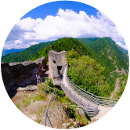
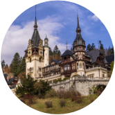
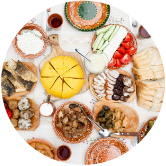

Day 1
Local guide Nora and Dracula expert Dacre meet you at the Bucharest airport. We welcome you with the traditional Romanian cherry liqueur and delicious cookies, while necessary procedures are being made to ensure our group a covid-safe entry and stay in Romania. Short transfer to a nearby comfortable hotel. Check in and rest after the flight or explore the relax & spa area of the hotel. In the early evening, we get together for an introduction into the Dracula concept, together with Dacre. We explore Bram Stoker’s Count Dracula and history’s Vlad Dracula. Dacre gives us valuable insights of his uncle’s novel writing research. The welcome dinner is served in the restaurant of the hotel.
Day 2
We visit Bucharest’s old town, a unique blend of European urban everyday life & ancient Byzantine, and huge communist buildings from before 1989, the year that marks the fall of communism. We pass by the 14th century Old Princely Court of Vlad Dracula, built as a residence during the rule of Vlad III Dracula in 1459. The historians of the Bucharest Museum are now working on restoring the archeological site. We also learn about the other Romanian modern day ”vampire” who actually tormented the Romanian people in other ways than a typical vampire would, Ceausescu, as we pass by the enormous Palace of Parliament, a monument of dictator-like megalomania. We enjoy a typical Romanian lunch in one if the oldest inns of Bucharest, part of a cultural heritage building with walls impregnated with memories from the 1700’s. In the afternoon, we leave Bucharest and head towards the Carpathian Mountains. We stop for a short visit in UNESCO site of Curtea de Arges monastery church, with the graves of all Romanian kings. We then check in at a comfortable hotel at the foothill of Poienari Fortress. After dinner, we have an ”around the fire” session, with Dacre reading ”Transylvania Vampire Tales” and Nora playing guitar and revealing some of the Romanian superstitions still vivid today.
Day 3
A hearty breakfast is served before a hike up to the Poienari Fortress, built in the 13th century. Realizing the potential for a castle perched high on a steep precipice of rock, Vlad III repaired and consolidated the structure in the 15th century, making it one of his main fortresses. After enjoying the panorama of the Arges valley, we leave Poenari and drive on the impressive road of the Transfagarasan, with a scenic lunch stop on the way. We arrive to Sibiu later this evening. In Sibiu, we check in at a comfortable hotel close to the old town. This is Nora’s hometown, and also previously European cultural capital. Just before dinner, Nora takes you on a pleasant and very interesting guided walk of the ”town of 1000 eyes”, as Sibiu is called. We conclude with a tasty dinner at a quaint restaurant in an old piazetta.
Day 4
After a leisurely morning with spare time for shopping and strolling around in charming Sibiu, we depart for Sighisoara. On the way, we stop by in one of the colorful Saxon villages. We visit the fortified church, a dominant feature in the medieval structure in most Transylvanian-German villages. We learn about the very disciplined way in which the Saxons organized their life, in order to survive in front of enemy attacks throughout the centuries. We taste some of the traditional chark offerred by our Saxon host, who keeps the Germanic tradition alive. We arrive to Sighișoara, the birthplace of Vlad Dracula in the afternoon. We check in at a hotel housed in one of the old nobiliary houses of the old town. During an early evening guided walk, we get to know the UNESCO walled city, one of the last remaining medieval citadels still inhabited to this day. We also explore an exhibition dedicated to the personality of Dracula. After dinner in the house where Vlad Dracula was born, we enjoy a wine & vampire movie evening, together with Dacre, in the mystical cellar of one of the patrician buildings within the walls of the medieval citadel.
Day 5
Enjoy the first hours of the day in Sighisoara with some free time. Walk up the stairs in the clock tower - now a museum, for a panorama view of the town and its surroundings. Have lunch on your own in one of the cozy restaurants of the old town. We then leave Sighisoara and head towards the region of the Borgo Pass. On the way, we stop for a wine tasting in the idyllic setting of the Transylvanian highlands. Later this evening, we check in at a mountain hotel in Colibita, right by the lake. We gather around the bonfire on the beach, and meet the entertaining medieval band of the Transylvanian Pipers and their fire jugglers for dinner.
Day 6
A morning dip in the mountain lake, weather permitting, could invigorate us before starting to cross the magnificent scenery of the Borgo Pass. Lunch is served on the way, at a shepherds farm called ”stana” in Romanian. Here, we find out more about the nomad life of the shepherds, with their transhumance and the real stories of wolves attacking the flocks. We witness the cheese making process and taste a variety of local cheese. Crossing the Carpathian chain, we arrive to a rustically placed inn, where we accommodate for the coming two nights. We visit the local visitor’s centre of the Calimani National Park, to get an overview of the geography, geology and wildlife of the area. Here, Dacre helps us understand how Bram Stoker reasoned when placing Dracula’s fictional castle in this region. A cauldron gulasch dinner awaits at the hotel. Dacre reads and analyzes the final chapter of the novel Dracula.
Day 7
This is a hiking day. We leave early in the morning and the destination is the extinct volcano site of the mountain top where Bram Stoker placed Dracula’s fictional castle. There aren’t many words that can describe this experience. Nature’s majestic silence and Dacre’s tales of his uncle’s research, all backed by our mountain guide’s reliable lead, grant an exceptional hike to a very little explored exciting spot. We have a picnic lunch on the way. We return to our inn in the early evening and enjoy a well deserved dinner and a relaxing movie night introduced by Dacre.
Day 8
Leaving the the landscape of the Calimani National Park behind, we head now southwards. Lunch is served with a beer tasting at the Hungarian-Szekler brewer Csiki Sör. Later on, we check in at the manor that belonged to a family of the Székler nobility. We visit the local blacksmith and witness his craft, performed according to ancient tradition. We are accommodated in rooms furbished with a special patina. We feast on a tasty renaissance dinner served in the manor salon, in the sound of classical live music.
Day 9
Leaving the Szekler county, we arrive to Brasov. Nora takes us on a guided walk through the old town, passing by the Black Church, as well as the house of Katharina, known as Vlad Dracula’s mistress, for whom he’s said to have nurtured eternal love. Enjoy a couple of hours free time for shopping and lunch, before we move on towards Bran. In Bran, we check in at a boutique inn close to Bran Castle, known to be the most popular image of Dracula’s Castle. Dacre will graphically explain how he discovered imagery connections between this castle and the way in which Bram Stoker described the castle exterior. Dinner is served at the hotel restaurant.
Day 10
An excursion to the higher meadows of the Carpathian brings us to a vista reminding of the Austrian Alps. We will taste the traditional Transylvanian cheese matured in pine bark, typical of this region. A rich lunch on the way, and we get back to our hotel in Bran, to get ready for the visit of Bran Castle. During this maze-like visit, we travel through the time tunnel and conclude with a vampire dinner at the restaurant at the foothill of the cliff, on the castle premises. Bring your gothic/victorian/vampire accessories to enhance the atmosphere!
Day 11
We leave the ”terrific precipice” of Bran Castle behind and head towards Bucharest. On the way, we stop and admire the exterior of the beautiful Peles Castle. Another setting for more modern legends such as the imaginary country of Aldovia, this royal castle was built in Neo-renaissance style by the first king of Romania, Carol I of the Hohenzollern dynasty. Lunch is served on the way to Bucharest. Just before we reenter the territory of the Romanian capital, we have the chance to visit Snagov Monastery, one of the alleged burial sites of Vlad Dracula, which is located on an island on the northern part of a large lake. This is where it is believed that Vlad the Impaler was killed by the Janissaries during a battle between Wallachian and Ottoman forces and then buried within the grounds surrounding the monastery. Back at our comfortable airport hotel, we have time to relax and prepare for the return flight. We have saved the necessary amount of time for the process of covid-testing before the flight. Dinner is served at a restaurant nearby, with a traditional Romanian folklore dance show.
Day 12
After a last breakfast on Romanian grounds, it’s time to depart towards the airport. Your local guide Nora Vintila and your Dracula-host Dacre Stoker say LA REVEDERE!